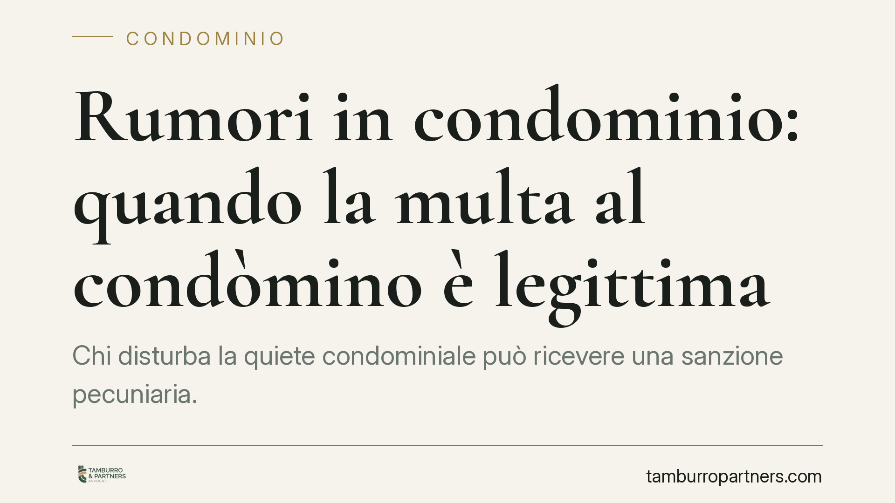

Rumori in condominio: quando la multa al condòmino è legittima
Chi disturba la quiete condominiale può ricevere una sanzione pecuniaria. Ma non sempre: la multa è legittima solo se il regolamento contrattuale la prevede espressamente e nel rispetto dei limiti di legge. Vediamo quando il condominio può applicarla, con quali importi e con quale procedura, per evitare delibere impugnabili e contestazioni fondate.

Il fatto: convivenza e limiti alla quiete
I rumori molesti sono tra le cause più frequenti di conflitto condominiale. Musica ad alto volume, lavori fuori orario, animali, comportamenti reiterati: situazioni che minano la vivibilità dell'edificio.
La domanda ricorrente è se il condominio possa reagire con una sanzione pecuniaria diretta, senza passare dal giudice. La risposta è affermativa, ma a condizioni precise. Fuori da quei presupposti, la multa è illegittima e il condòmino può opporsi.
Inquadramento normativo
Lo strumento è previsto dall'art. 70 delle disposizioni di attuazione del codice civile. La norma stabilisce che, per le infrazioni al regolamento di condominio, può essere disposta una sanzione fino a 200 euro, elevabile fino a 800 euro in caso di recidiva, cioè quando la violazione si ripete.
Il punto decisivo è un altro: la sanzione è applicabile solo se il regolamento condominiale la prevede espressamente. Deve inoltre trattarsi di un regolamento di natura contrattuale, cioè accettato da tutti i condòmini o richiamato negli atti di acquisto, non di un semplice regolamento assembleare (approvato a maggioranza). Solo il regolamento contrattuale può imporre obblighi e limitazioni ai diritti individuali dei singoli, come appunto una penale economica.
Infine, l'importo destinato alla sanzione confluisce nel fondo comune: non è un risarcimento a favore del vicino disturbato, ma una misura a tutela dell'intero condominio.
Implicazioni pratiche
Per il condòmino rumoroso, la conseguenza è che una multa può arrivare solo se nel regolamento contrattuale esiste una clausola che vieta i rumori e ne prevede la sanzione. Senza quella clausola, qualsiasi delibera che imponga il pagamento è viziata.
Per l'amministratore e per l'assemblea, il margine è stretto. L'amministratore non può decidere autonomamente l'irrogazione: serve una delibera assembleare che accerti la violazione e disponga la sanzione, nei limiti previsti. Delibere che superano gli importi di legge, o che sanzionano condotte non contemplate dal regolamento, sono impugnabili.
Va poi tenuto distinto il piano della sanzione condominiale da quello giudiziario. Se i rumori superano la normale tollerabilità (art. 844 c.c.), il condòmino disturbato può comunque agire in via civile per farli cessare e chiedere il risarcimento, oppure segnalare condotte che integrano il disturbo delle occupazioni e del riposo delle persone (art. 659 c.p.). La multa ex art. 70 non esclude questi rimedi.
Cosa fare in concreto
- Verificate la natura del regolamento. Controllate se il regolamento condominiale è contrattuale e se contiene una clausola specifica sui rumori con relativa sanzione. Senza clausola, nessuna multa è legittima.
- Rispettate i limiti di importo. La sanzione non può superare 200 euro, o 800 euro in caso di recidiva accertata. Delibere oltre soglia sono annullabili.
- Passate sempre dall'assemblea. L'amministratore non può irrogare la multa da solo: pretendete una delibera che descriva la condotta contestata e ne indichi la prova.
- Documentate la violazione. Raccogliete elementi concreti (segnalazioni, testimonianze, eventuali rilevazioni tecniche) prima di deliberare, per reggere a un'eventuale opposizione.
- Se siete i destinatari, valutate l'impugnazione. In caso di multa priva di base regolamentare o oltre i limiti, consigliamo di verificare i termini per l'impugnazione della delibera davanti al giudice competente.
La sanzione condominiale è uno strumento utile, ma funziona solo se ancorato a una base regolamentare valida e a una procedura corretta. Delibere improvvisate rischiano di trasformare una questione di convivenza in un contenzioso.
---
*Contributo informativo a cura di Tamburro & Partners - Avv. Giuseppe Tamburro. Non costituisce parere legale.*
Ogni condominio ha una storia a sé.
Se gestisci un'amministrazione e vuoi un confronto su una specifica questione condominiale, scrivi allo studio. Ti rispondiamo entro un giorno lavorativo.